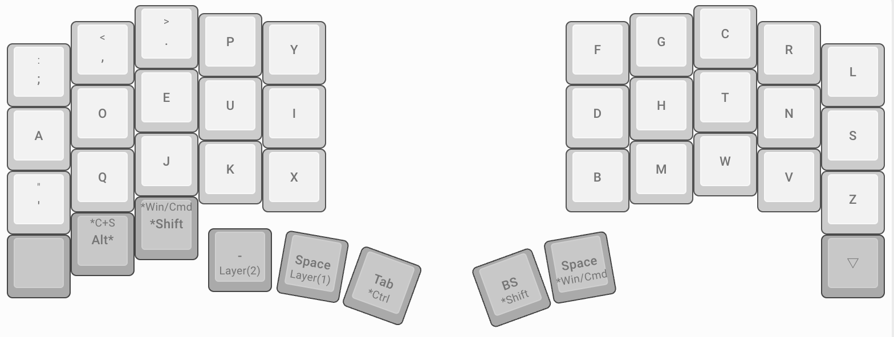
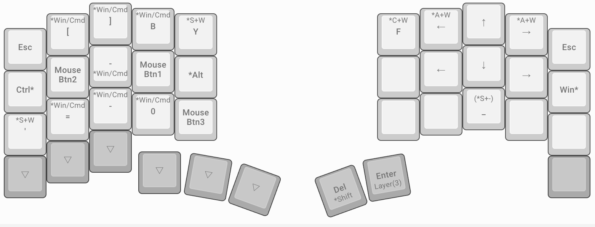

Dvorak #
Dvorakについて考える。
Custom Dvorak #
キーマップ沼にハマり、キーマップを考えるのがめんどくさくなった。Programmer Dvorakという配列を見つけたので、レイヤーを駆使し、ホームポジションから、手を動かなさくて済むように、カスタムキーマップを考えた。(改良の余地あり)
レイヤー0 #
Dvorak配列にする。

レイヤー1 #
左右クリック、タブ切り替え、拡大縮小…。その他ショートカットキーを配置。karabiner-elementsで上書きしている部分もあります。

ショートカットキー(よく使うもの、その他…) #
GUIで便利なもの #
| ショートカットキー | 効果 |
|---|---|
| cmd + [ | 戻る(ブラウザ) |
| cmd + ] | 進む(ブラウザ) |
| alt + cmd + → | 右タブ切り替え(ブラウザ) |
| alt + cmd + ← | 左タブ切り替え(ブラウザ) |
| ctr + → | 仮想デスクトップ切り替え(右) |
| ctr + ← | 仮想デスクトップ切り替え(左) |
| ctr + ↑ | ウィンドウの切り替え |
| ctr + ↓ | ウィンドウの切り替え |
| cmd + = | 拡大 |
| cmd + - | 縮小 |
| cmd + 0 | 比率リセット |
文字列移動 #
| ショートカットキー | 効果 |
|---|---|
| cmd + → | 右末尾 |
| cmd + ← | 左末尾 |
| cmd + ↑ | 上末尾 |
| cmd + ↓ | 下末尾 |
| opt + → | 右単語 |
| opt + ← | 左単語 |
文字列選択 #
| ショートカットキー | 効果 |
|---|---|
| shift + → | 文字列選択(右一文字) |
| shift + ← | 文字列選択(左一文字) |
| shift + ↑ | 文字列選択(上一文字) |
| shift + ↓ | 文字列選択(上一文字) |
| shift + cmd + → | 文字列選択(右末尾) |
| shift + cmd + ← | 文字列選択(左末尾) |
| shift + cmd + ↑ | 文字列選択(上末尾) |
| shift + cmd + ↓ | 文字列選択(下末尾) |
| shift + opt + → | 文字列選択(右単語) |
| shift + opt + ← | 文字列選択(左単語) |
その他 #
| 変換前 | 変換後 |
|---|---|
| cmd + b | cmd + n |
| cmd + shift + y | cmd + shift + t |
| cmd + + ctr + f | cmd + ctr + y |
| cmd + shift + ' | cmd + shift + z |
レイヤー2 #
Layer(2)を押下時。

レイヤー3 #
Layer(3)を押下時。

その他 #
Dvorak を使うとショートカットキーがメチャクチャになる。 対策として、karabiner-elementsで、ショートカットキーを Qwerty と同じにしている。
変換例(押された時に、上書きされるように設定している) #
| 変換前 | 変換後 |
|---|---|
| cmd + ' | cmd + z |
| cmd + q | cmd + x |
| cmd + j | cmd + c |
| cmd + k | cmd + v |
| cmd + x | cmd + b |
Vim、その他のツール #
Vim は、気合いで頑張るか、別レイヤーを組むなどの対策
日本語入力 #
k を使った入力がかなりきつい。別の入力方式でも良いかも。
- 大西配列
- Tomisuke配列
- Astarte配列
- DvorakJP